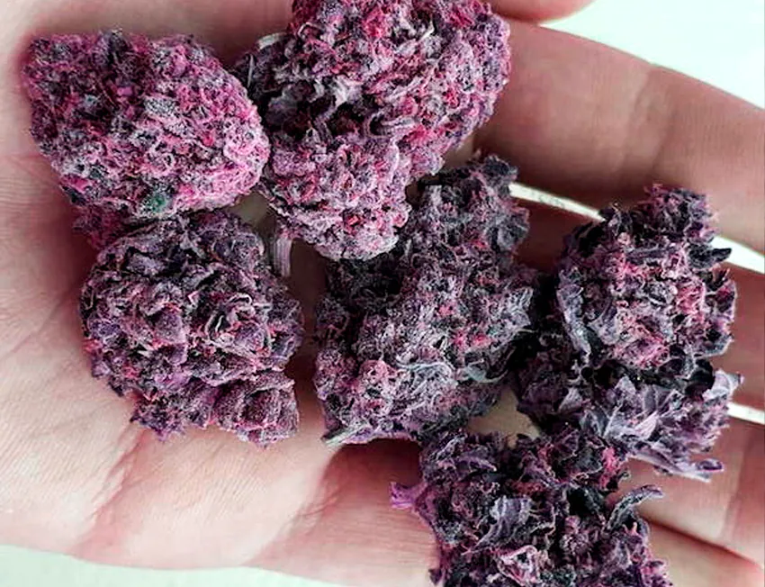
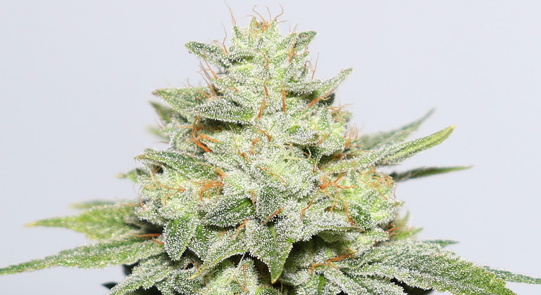
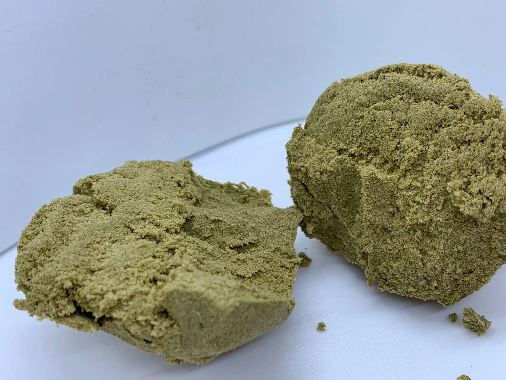
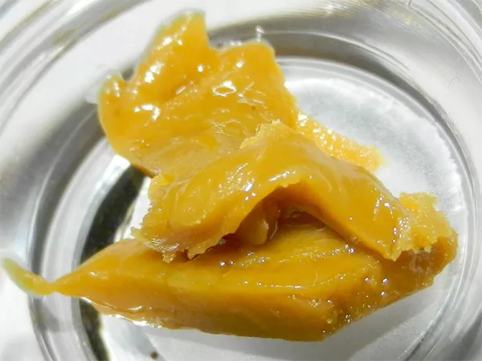
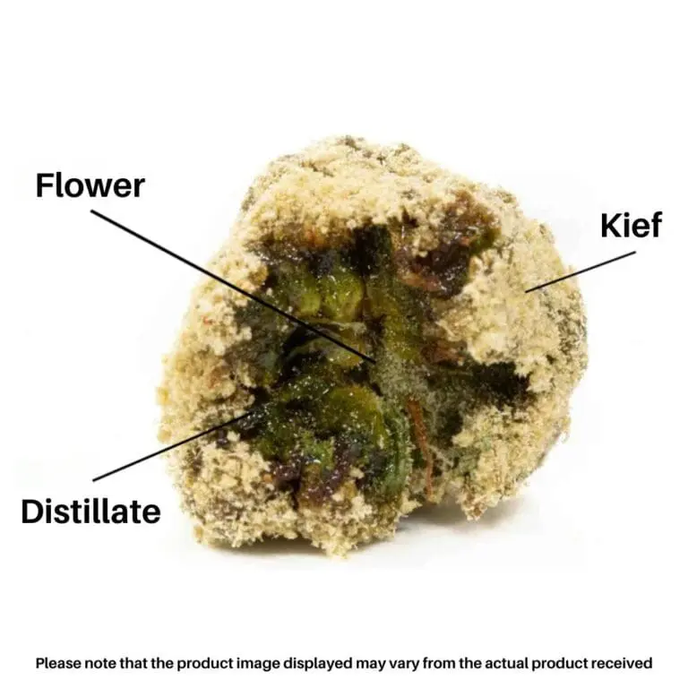

A Purple Kush é uma variedade de cannabis 100% índica, famosa por seus efeitos relaxantes profundos e sua coloração roxa marcante. Originária da região de Oakland, Califórnia, ela é o cruzamento das strains Hindu Kush e Purple Afghani.
Com altos níveis de THC (geralmente entre 17% e 27%), é amplamente usada para tratamento da dor, insônia e estresse. Seu aroma é terroso e doce, com notas de uva e frutas escuras, o que a torna bastante agradável para uso medicinal noturno.

A Gorilla Glue, também conhecida como GG4, é uma strain híbrida potente, resultado do cruzamento entre Chem’s Sister, Sour Dubb e Chocolate Diesel. Famosa por seus efeitos intensamente relaxantes e eufóricos, ela tem altos níveis de THC (entre 20% e 30%), o que a torna popular tanto para uso recreativo quanto medicinal.
Seu nome vem da sensação "colante" que proporciona — muitos usuários relatam ficarem literalmente “colados” no sofá. É indicada para o alívio de dores crônicas, ansiedade, depressão e insônia. O aroma é forte, com notas de terra, pinho e diesel.

A Colombian Gold é uma strain sativa clássica, originária das montanhas de Santa Marta, na Colômbia. Famosa desde os anos 60 e 70, ela é conhecida por seus efeitos energizantes, mentais e claros, ideais para quem busca foco, criatividade e alívio do estresse sem sedação.
Com níveis moderados de THC (geralmente entre 15% e 20%), é utilizada medicinalmente para tratar fadiga, depressão e transtornos de humor. Seu perfil de sabor combina notas cítricas, terrosas e doces, com um leve toque herbal.

A extração ICE é uma técnica utilizada principalmente na área de química analítica e farmacêutica para a extração seletiva de compostos iônicos (como sais ou ácidos/bases fracas) de uma matriz complexa. O método emprega um sistema de extração líquido-líquido ou sólido-líquido, onde os íons de interesse são isolados com alta eficiência e pureza, utilizando condições controladas de pH e solventes específicos.
Essa técnica é valorizada por ser limpa, seletiva e eficiente, com baixo consumo de solventes tóxicos, alinhando-se aos princípios da química verde. É comumente aplicada em amostras ambientais, alimentos e formulações farmacêuticas para separar e quantificar analitos iônicos de forma precisa.
Se estiver se referindo a outro tipo de "ICE" (por exemplo, algo ligado à medicina, engenharia ou outra área), posso adaptar o resumo conforme o contexto desejado.

O Crumble é um tipo de concentrado de cannabis produzido por meio do processo de extração conhecido como ICE (Ice Water Extraction), que utiliza água gelada e gelo para separar os tricomas (glândulas ricas em canabinoides e terpenos) da planta. Esse processo é mecânico, não usa solventes químicos, e resulta em um produto mais natural e limpo.
O Crumble tem esse nome devido à sua textura seca, esfarelada e quebradiça, diferente de outros concentrados como o shatter ou o wax. Ele costuma ter alta potência, com altos teores de THC ou CBD, dependendo da planta de origem, e é valorizado por usuários que buscam um extrato puro, com preservação do sabor e do perfil de terpenos.
O produto final pode ser consumido por dabbing, vaporização ou adicionado a flores para uso medicinal ou recreativo, onde permitido por lei. Por ser derivado de uma extração sem solventes, o Crumble é muitas vezes considerado mais seguro e limpo para o consumo.

O Moonrock é um produto de cannabis altamente potente, criado pela combinação de flor de cannabis, óleo de haxixe (concentrado) e uma cobertura de kief (tricomas ressecados da planta). Esse trio resulta em um produto com altíssimo teor de THC, frequentemente acima de 50%, o que o torna um dos derivados mais fortes disponíveis.
Visualmente, o Moonrock se assemelha a uma pedra coberta de cristais, daí o nome “moonrock” (“rocha lunar”). É consumido geralmente em pequenas quantidades e não deve ser moído em trituradores comuns, pois sua consistência pegajosa pode entupir o equipamento. O ideal é desmanchar manualmente e consumir em pipes, bongs ou vaporizadores.
Devido à sua potência, o Moonrock é recomendado para usuários experientes ou pacientes medicinais com alta tolerância, buscando efeitos intensos como alívio da dor, insônia ou náusea. Também existe uma versão com CBD, voltada para fins terapêuticos sem os efeitos psicoativos fortes.